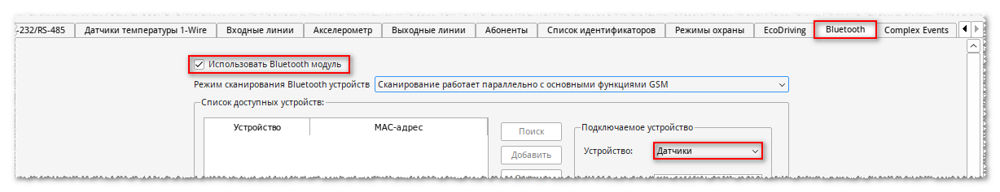
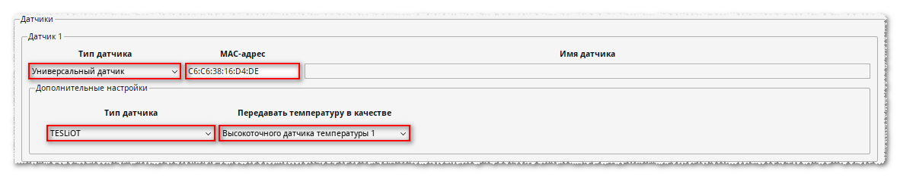
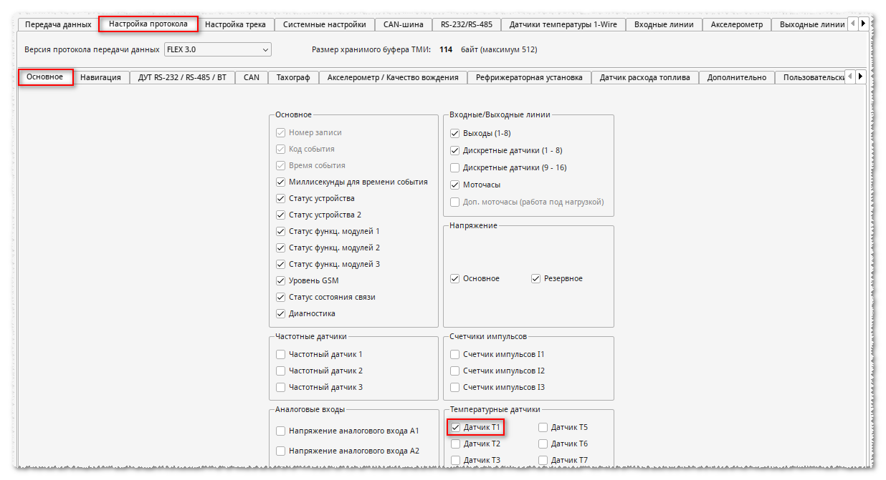
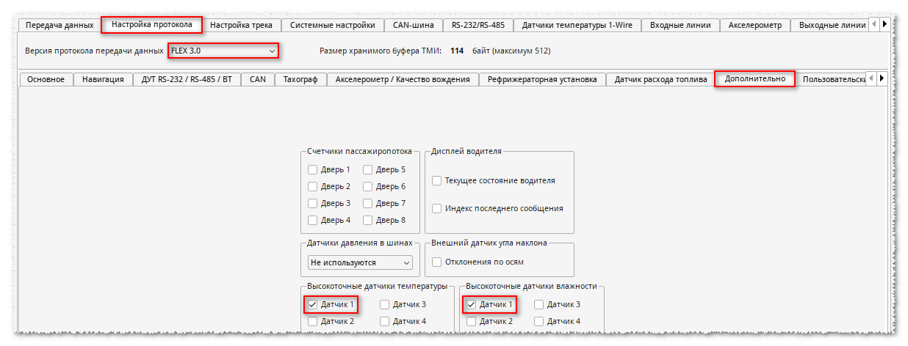
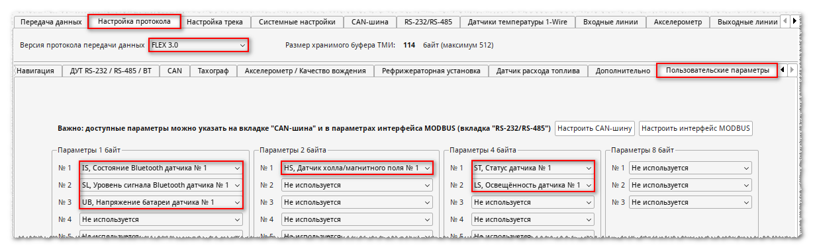

Общая информация
Для стабильного приема данных от датчика «TESLiOT» рекомендуется настроить датчик на выдачу данных с интервалом раз в 10 сек или чаще. При использовании настройки с более редкими интервалами выдачи данных в некоторых ситуациях устройство может периодически "терять" информацию от датчика.
Настройка
1. В конфигураторе
Идентификация датчика производится только по MAC-адресу.
Поле "Имя датчика" необходимо оставить пустым.
Поле "Имя датчика" необходимо оставить пустым.
На вкладке Bluetooth:
 На вкладке Настройка протокола:
  
2. По команде
Замените в команде FF:FF:FF:FF:FF:FF на реальный MAC-адрес датчика.
Пример для Датчика 1:
*!EDITS BLUETOOTH:GLOBAL(1),CHANNEL1(SENS),SENS1(7,FF:FF:FF:FF:FF:FF,!),US1(0),TS1(0,1),PROTOCOL:FLEX(30,&45[1]163[1]167[1]207[111]223[1]238[11]),USRPRM1(is1,sl1,ub1),USRPRM2(hs1),USRPRM4(st1,ls1)
Пример для Датчика 2:
*!EDITS BLUETOOTH:GLOBAL(1),CHANNEL1(SENS),SENS2(7,FF:FF:FF:FF:FF:FF,!),US2(0),TS2(0,2),PROTOCOL:FLEX(30,&46[1]164[1]168[1]210[111]224[1]240[11]),USRPRM1(,,,is2,sl2,ub2),USRPRM2(,hs2),USRPRM4(,,st2,ls2)